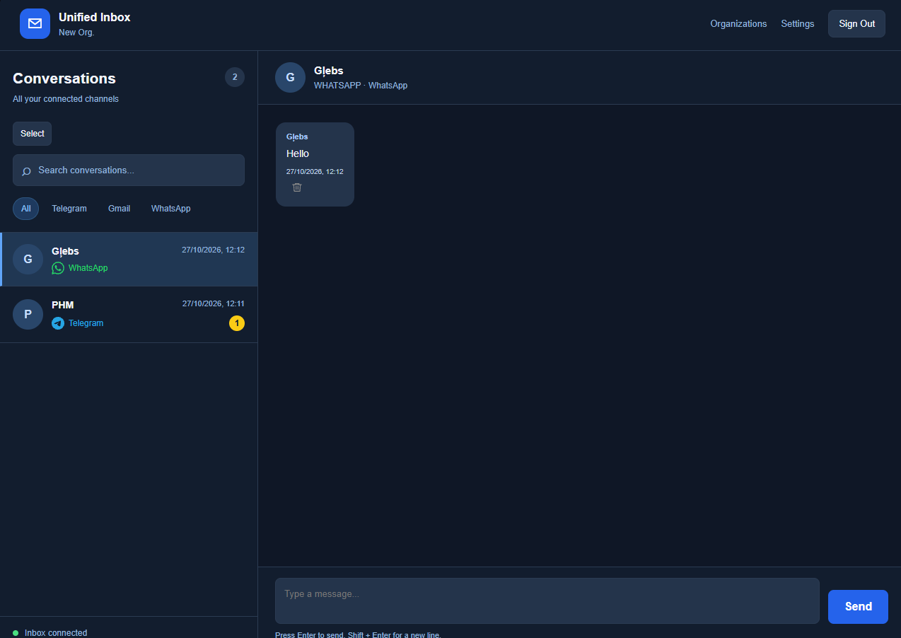
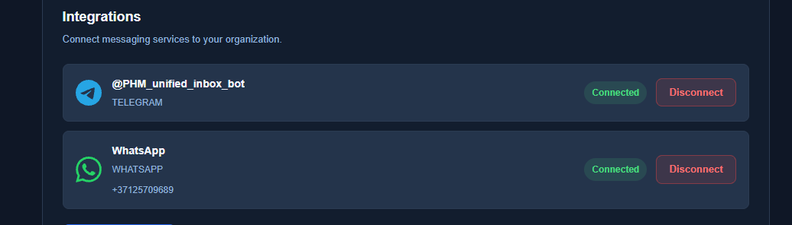
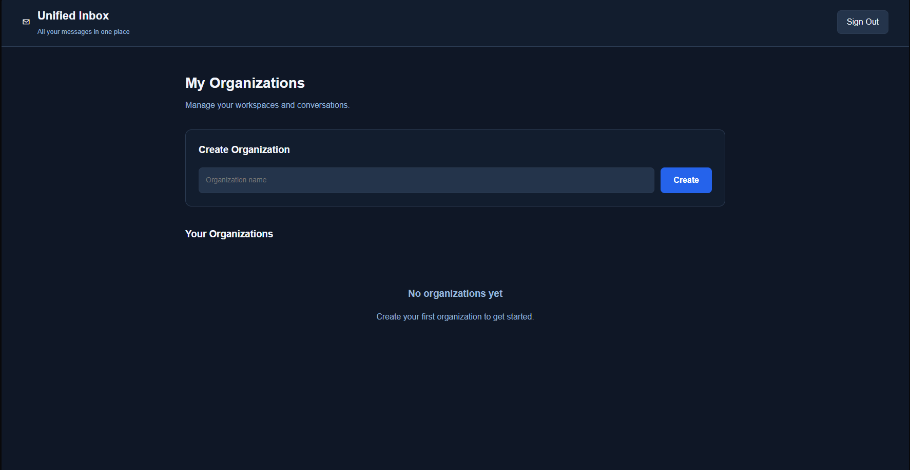
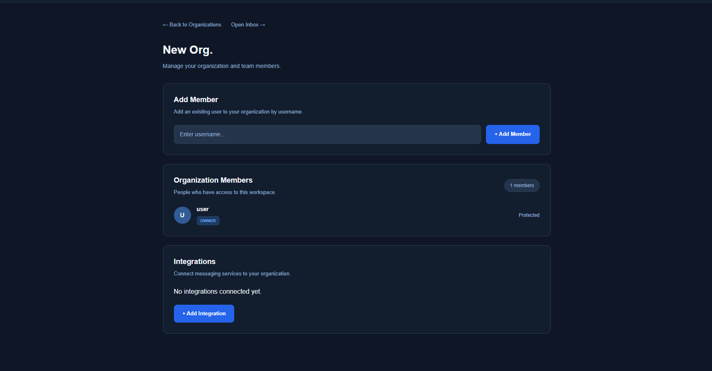

Unified Inbox
A centralized messaging application that brings conversations from multiple communication platforms into a single workspace.
Overview
Unified Inbox is a personal full-stack project with a primary focus on backend development. It is designed to simplify communication across multiple messaging platforms by providing a centralized interface for conversations and integrations.
Instead of managing messages separately in different applications, users can work with connected communication channels through one system.
The project also provides organization management, member access, and a unified integration architecture.

The Problem
Communication across different messaging platforms can become difficult to manage, especially when messages are distributed across multiple applications and accounts.
Unified Inbox explores a centralized approach where messages, conversations, and connected services are managed through a common backend.
The main technical challenge is handling platform-specific APIs while maintaining consistent internal models and business logic.
Tech Stack
The backend is developed using Java and Spring Boot, with PostgreSQL for persistent storage and Flyway for database migrations.
- Java — core backend language
- Spring Boot — application framework
- Spring Web — REST controllers and HTTP endpoints
- Spring Data JPA — database persistence
- PostgreSQL — relational data storage
- Flyway — version-controlled database migrations
- REST APIs — client and external service communication
- Webhooks — processing external events
- Git & GitHub — version control
The frontend uses HTML, CSS, and JavaScript to provide a browser-based interface for interacting with the backend.
Backend Architecture
The application follows a layered architecture that separates request handling, business logic, persistence, and external platform integrations.
- Controllers — expose REST endpoints and handle incoming HTTP requests.
- Services — implement application logic and coordinate operations.
- Repositories — provide database access through Spring Data JPA.
- Entities and DTOs — represent persistent data and API request/response models.
- Integration components — isolate communication with external messaging providers.
- Webhook handlers — process incoming events from connected platforms.
A key architectural goal is to keep platform-specific logic separate from the core messaging functionality.
This reduces the need to modify common business logic whenever another messaging provider is added.
Messaging Integrations
Unified Inbox includes an integration management system for connecting external communication platforms to an organization.
The application currently demonstrates connected Telegram and WhatsApp channels. Integration-specific functionality is handled by dedicated backend components.
The architecture is being developed toward a common integration model, where each provider implements shared operations while keeping its own API details isolated.

Conversations & Messages
The messaging interface provides access to conversations from connected communication platforms.
Users can select conversations, view message history, and send replies through the application.
Incoming messages are processed by the backend and represented using a common internal data model, allowing messages from different providers to be displayed consistently.
The interface also provides platform-based filtering, conversation search, and message delivery status indicators.
Organization Management
Unified Inbox supports organizations as separate workspaces for managing conversations and integrations.
Users can create organizations, access organization settings, and manage membership.
Organization roles and access restrictions help control which users can interact with organization-specific resources.


Database & Persistence
PostgreSQL is used to store application data, including organizations, users, connections, conversations, and messages.
Spring Data JPA provides the persistence layer, while Flyway manages changes to the database schema through versioned migrations.
Using database migrations helps keep schema changes reproducible and makes it easier to evolve the application without relying on manual database modifications.
Technical Challenges
One of the main challenges is designing a system that can support multiple external messaging providers without tightly coupling the application to a single platform.
Another important challenge is maintaining consistent message states while handling asynchronous events and responses from external services.
The project also involves organization-level access control, database schema evolution, and error handling across internal and external APIs.
These areas continue to be improved as development progresses.
Development Status
Unified Inbox is an ongoing personal project.
The current development focus includes improving the integration architecture, strengthening error handling, refining message processing, and expanding support for external platforms.
The project is primarily intended to develop practical experience in Java backend engineering, API integration, database design, and application architecture.
Source Code
The project is developed using Git for version control. My other work and repositories are available on GitHub.